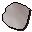

Cow
| Config name | cow |
| NPC id | 81 |
| Combat level | 2 |
| Hitpoints | 8 |
| Respawn | 90 ticks |
| Options | Attack |
| Category | cow |
| Wander range | 5 tiles from spawn |
| Max range | 7 tiles from spawn |
| Defined in | scripts/_unpack/225/all.npc |
| Bonuses | Attack bonus -15, Strength bonus -15, Stab def -21, Slash def -21, Crush def -21, Magic def -21, Range def -21 |
Cow
It's a dairy cow.
Show all 52 spawns on the world map → Open in knowledge graph →
Drops
Drop script: scripts/drop tables/scripts/cow.rs2 (category handler _cow)
Always dropped
| Item | Quantity | Rarity | Notes |
|---|---|---|---|
| 1 | Always | ||
 Cow hide | 1 | Always |
Locations
Quests
Related NPCs (category cow)
Referenced in scripts
scripts/_test/scripts/cheats/cheat_interactions.rs2scripts/_test/scripts/cheats/cheat_npc.rs2scripts/general/scripts/flavour_text/cows.rs2scripts/minigames/game_ranging/scripts/leatherworker.rs2scripts/npc/scripts/cow_milking.rs2scripts/quests/quest_grandtree/scripts/king_narnode.rs2scripts/quests/quest_grandtree/scripts/translation_book.rs2scripts/quests/quest_itexam/scripts/arcaeological_expert.rs2